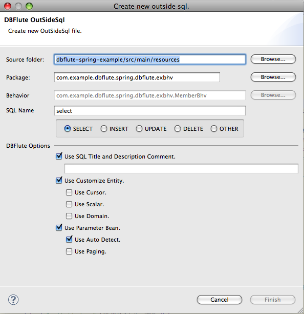

EMecha - EMSql
${indexlist}EMSqlとは？
外だしSQL(OutsideSql)のSQLファイルの実装支援を行う EMecha の中の一機能(EMechaがインストールされていれば利用可能)。これを利用すると、より安全な外だしSQLライフが送れます。
ゆえに EMecha は、(アーキテクトだけでなく)ディベロッパーもインストールするのがお奨めです。
外だしSQLの新規作成
Sql2Entityマークなどの設定を画面上で行い、外だしSQL用のSQLファイルを新規作成します。
Behaviorを選んで画面を起動
Package Explorer 上で対応する Behavior クラス(Exクラスのソースファイル)を選択して右クリックし、EMecha - New Outside Sql と選択すると画面が起動します。
対応する Behavior のソースファイルまでは、リソースの検索(ctrl + shift + R)から対応する Behavior を開き、Package Explorer の右上の方にある "Link with Editor" を押して階層を開くと良いでしょう。
図 : EMSqlの画面 (初期状態) 
{kind=link}
SQL Name を入力
初期状態では、select が選択されていています。検索系のSQLであればそのまま SQL Name の select に続けてSQL業務名を入力します。検索でなければ該当するものを選択してSQL名を完成させます。
SQLのタイトル・説明
画面からは、タイトルのみを入力します。 説明は、SQLを実装しながらでないと書きにくいと思われるため、SQLファイルが作成されてからエディタで記述するようにしています。
タイトルを入力しない場合は、タイトル・説明自体のコメント欄自体が出力されません。タイトルなしで説明だけを利用する状況は想定していません。
Sql2Entityマーク
利用したいSql2Entityマークにチェックしていきます。TypedParameterBean の利用を想定して、ある程度デフォルトでチェックが付いています。ページングか否か、戻り値 Entity の型(カーソルも含む)などオプション項目を要件に応じてチェックして下さい。
出力されるSql2Entityマークは、"df:entity" や "df:pmb" といったような、SQLの名前からEntity名やPmb名を抽出する方式のものになります。 もし、(SQLの名前とは違う)独自の名前を利用する場合は、SQLファイルが作成されてからエディタで修正して下さい。
出力先ディレクトリ
SQLファイルは、Eclipseプロジェクト直下の src/main/resources 配下の、対応するBehaviorと同じパッケージ に作成されます。ただ、これはデフォルト値であり、画面上で変更可能です。
エンコーディング
SQLファイルは、UTF-8 で作成されます。
外だしSQLへ飛ぶ！
ソースコード上の ParameterBean や CustomizeEntity から、対象となる外だしSQLをエディターで開くことができます。@since EMecha-0.5.6
クラス名にカーソル合わせて ctrl すると、"SQLを開く" というメニューが出てくるので、それをクリックすると対応する外だしSQLが開きます。
ParameterBeanから外だしSQLにctrl + クリック @Java
//
// クラス名のところでカーソル合わせて ctrl すると、
//
// _/_/_/_/_/_/_/_/_/_/_/_/_/_/_/
// o Open Declaration
// o SQLを開く
// o CustomizeEntityを開く
// _/_/_/_/_/_/_/_/_/_/
//
// がポップアップで表示される
// "SQLを開く" をクリックすれば外だしSQLへ！
//
PartOfMemberPmb pmb = new PartOfMemberPmb();
...
さらに、ParameterBeanなら "CustomizeEntityを開く"、CustomizeEntityなら "ParameterBeanを開く" が利用できます。(対応するクラスが存在しない場合は表示されません)
また、ctrl ではなく alt + クリックであれば、問答無用で "SQLを開く" になります。
厳密には、EMSqlではなくDFAssistの機能です。(内部的なお話です)